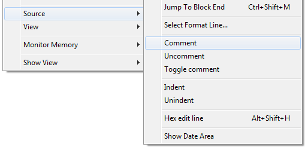
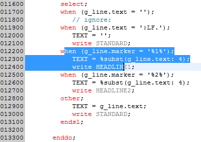
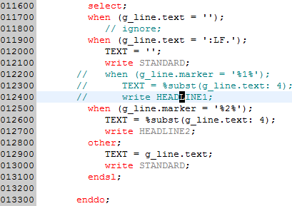
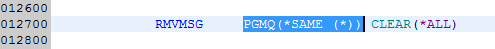
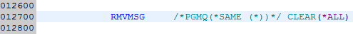
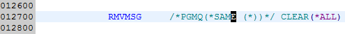
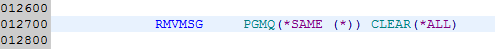

The "Comments" plug-in provides keyboard shortcuts for the Lpex editor for commenting and
uncommenting source lines. It is also possible to toggle a source line from commented to
uncommented and vice versa. The provided keyboard shortcuts are
The "Comments" plug-in provides keyboard shortcuts for the Lpex editor for commenting and
uncommenting source lines. It is also possible to toggle a source line from commented to
uncommented and vice versa. The provided keyboard shortcuts are
| Ctrl+Shift+Add | Comment source line |
| Ctrl+Shift+Substract | Uncomment source line |
| Ctrl+Shift+Multiply | Toggle comment |
You can also select the required function from the context menu:

The supported source types are:
| Note: This plug-in is mainly intended to be used with WDSCi 7.0, because WDSCi lacks the comment/uncomment options of RDi. But you can also install it for RDi. |

The result looks like that:

It is not required to select the complete source lines. Just start somewhere in the first line to change and span the selection to the last line. Then select the requested action.
In CLP and CLLE source members you can comment the selected part of a CL statement.

Commented selection:

If you want to uncomment it again, just put the cursor into the commented area and press the keyboard shortcut or select Uncomment from the context menu.

Comment removed:

This feature is not available for other source types, since commenting parts of a source statement is not possible for RPG or DDS source types.